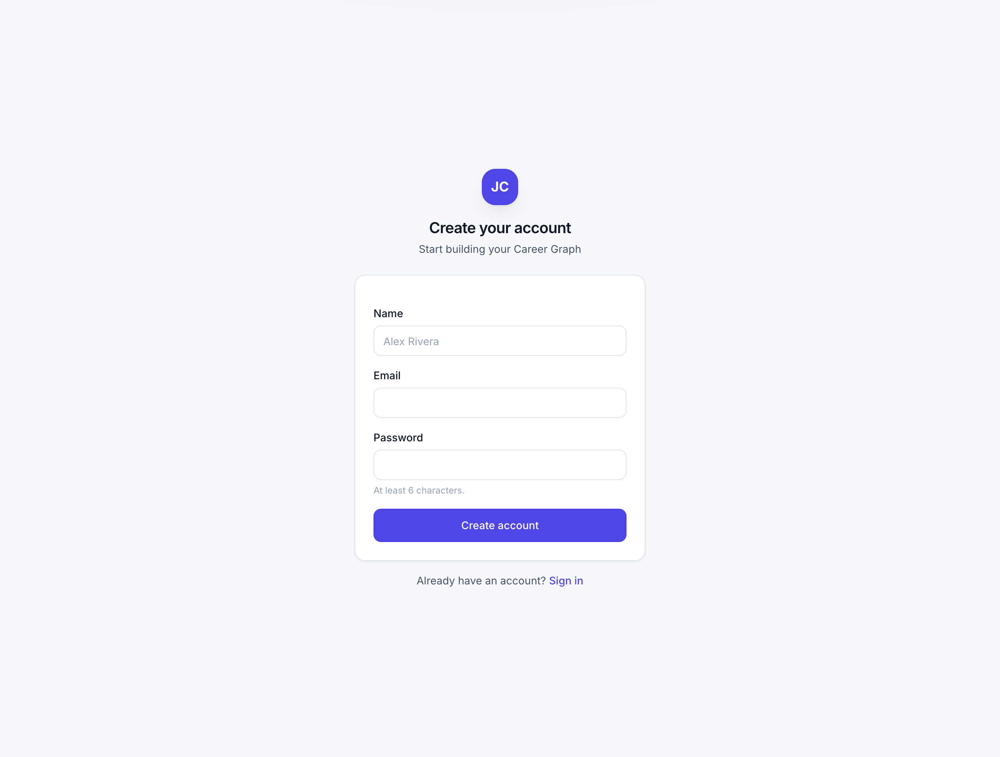
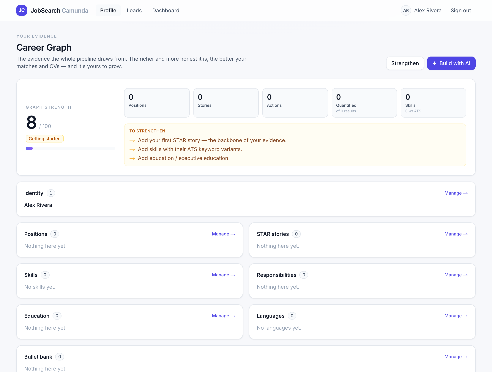
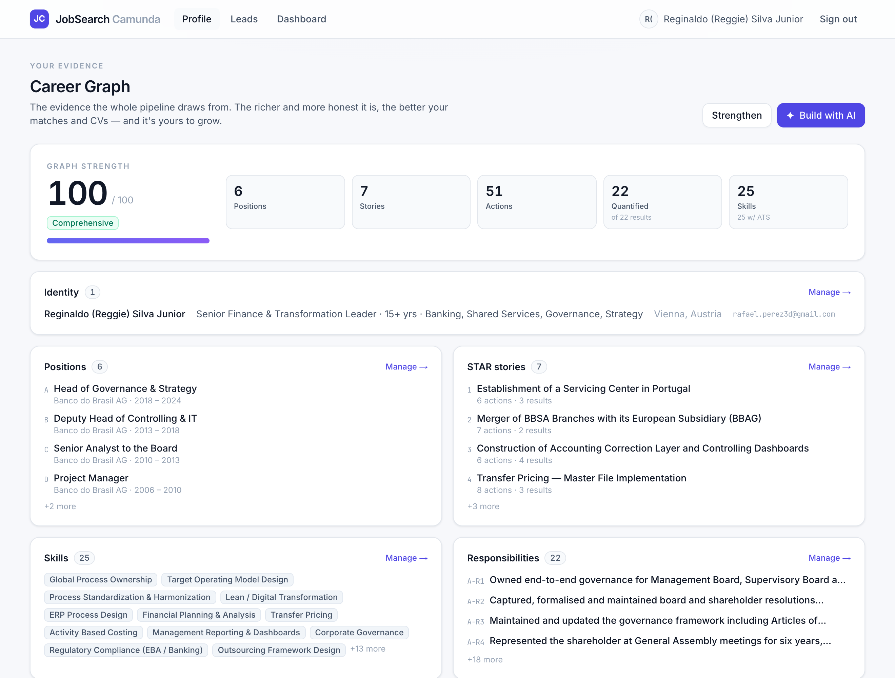

O1–O3 built the graph for one person. O4 opens it to everyone: anyone can create an account
and lands on their own, empty, fully isolated graph. It's real multi-tenancy — the exact
owner_id model that becomes Supabase RLS on deploy.



currentOwnerId() returns the logged-in user's id, and every query is scoped to it while every write stamps it. getLead(id) is scoped too, so you can't load someone else's lead by guessing its id. This is literally owner_id = auth.uid() — so on Supabase, drizzle/rls.sql turns it into database-enforced, defence-in-depth isolation.Built and verified on local Postgres — real users, real sign-up, real isolation. The
deployment swap is auth-provider + RLS, not a re-architecture: the local users table becomes
Supabase's managed auth.users, auth.uid() returns our owner_id, and one
generated policy (drizzle/rls.sql) enables owner_id = auth.uid() on every owner-scoped
table. Password hashing uses Node's crypto (scrypt) — no new dependency.
Swap the local password flow for magic-link / SSO and apply drizzle/rls.sql. Email verification, password reset and rate-limiting come with it.
Screening/tailoring inserts (requirements, tailoring, usage) still use the DEMO_OWNER_ID backstop — a new user running the full pipeline would pool those rows to the demo (minor cosmetic effects). Scope them to the lead's owner next.
One graph per user today; shared workspaces are a later tenancy model.
/api/ingest captures to whoever's session cookie is present (else the demo); a per-user capture token would be cleaner.
docs/phases/O4.md · code in lib/auth.ts, lib/queries.ts,
the action files, and drizzle/rls.sql. Screenshots are live captures; the test user was removed afterwards.